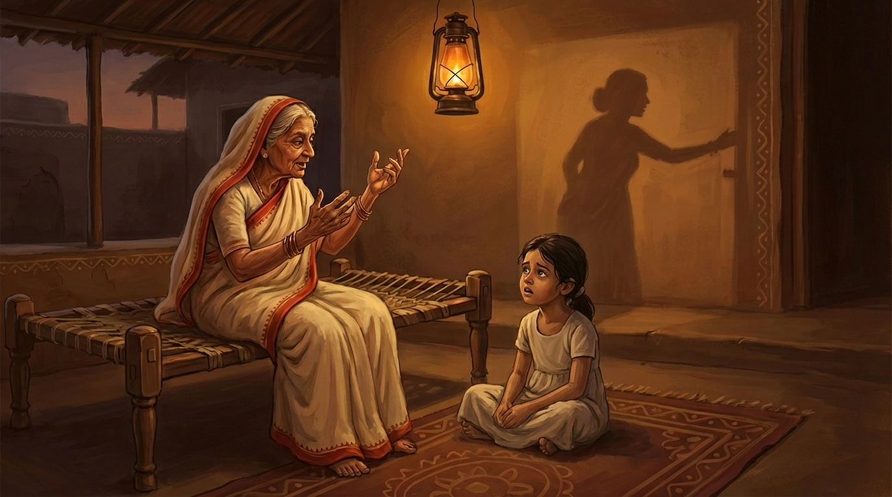
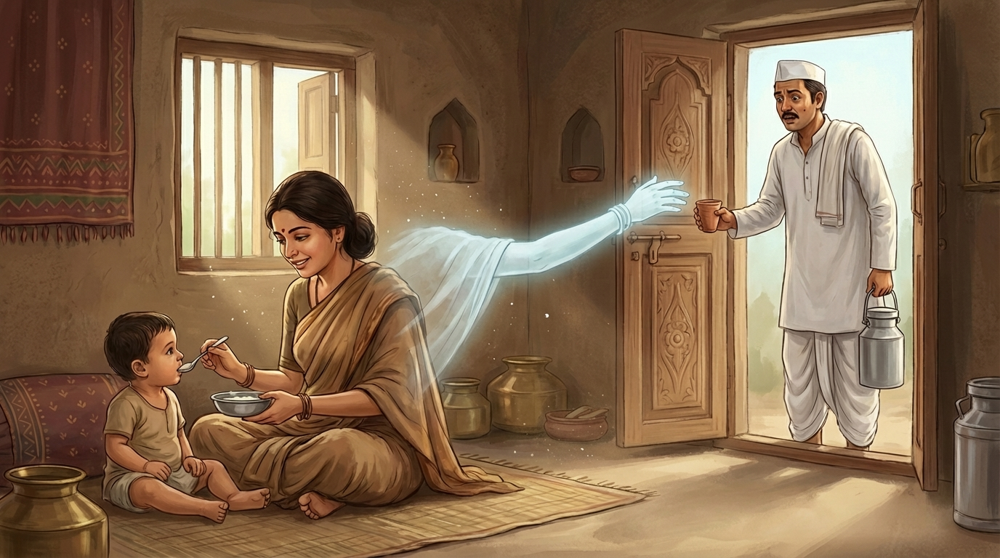
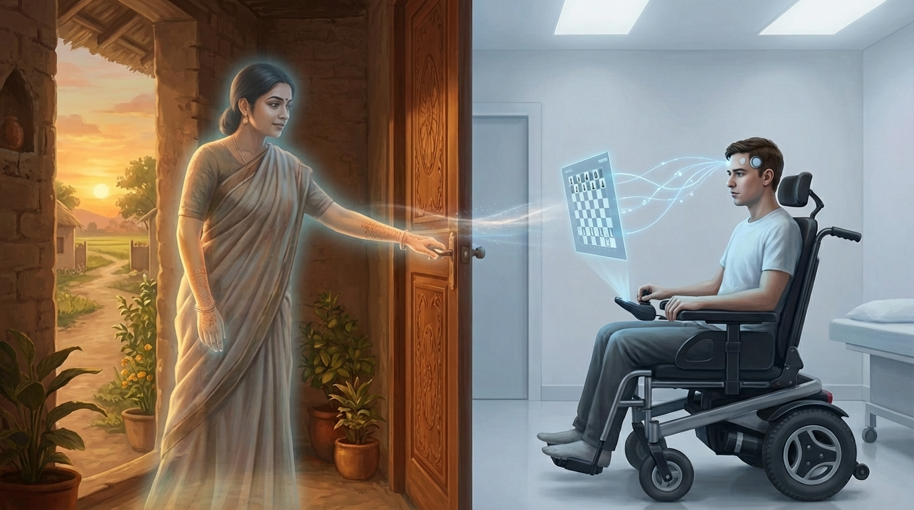
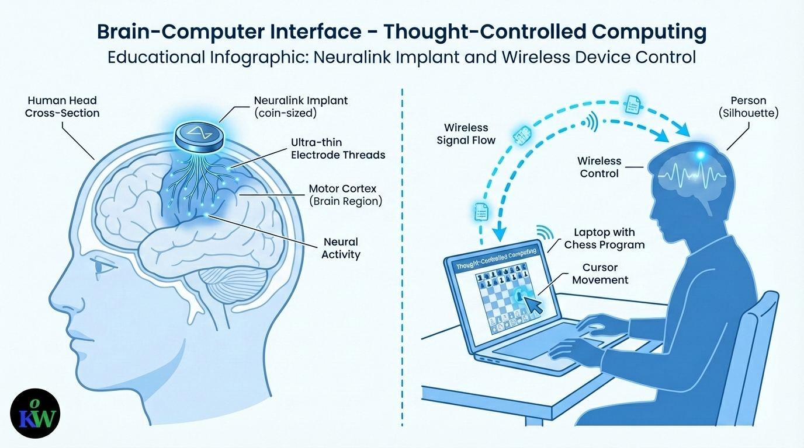

Did You Know?
A story where folklore becomes science

A lantern-lit evening, a grandmother, a story that would outlive herMy grandmother could not read a single word — but she was one of the wisest people I have ever known.
She told moral stories through ghost characters, knowing that children would stay glued to every word if there was a little mystery in it. And it worked on me every time.
One evening, she told me about a gentle ghost woman who loved human life so dearly, she married a kind man and had a baby. All she ever wanted was to belong. And somehow, my grandmother made me fall in love with her.
"She was a ghost living a human dream."

Both hands full — yet the door swings openOne afternoon, she was busy feeding her baby when the milkman knocked at the door. Her hands were occupied — the little one needed every spoonful of her attention.
So she reached out with a long, invisible hand — stretching silently across the room — and opened the door without missing a single bite. The milkman froze. Then he screamed.
"Ghost! Ghost!" he cried, and ran into the lane.
She understood. If they knew, they would only see the ghost — not the woman who loved her child. So that evening, without a single word, she was gone.
Nobody believed the milkman. How could that kind, gentle soul be a ghost? She was the warmest person any of them had ever known.

What folklore imagined, science builtFor decades, the story lived only in imagination. Then 2024 arrived.
Noland Arbaugh — paralysed from the shoulders down after a diving accident — received a Neuralink brain-chip. And in a quiet medical room, he did exactly what she had done. He reached out with an invisible hand — not made of spirit, but of electricity and thought.
He played chess online for 8 hours using only his thoughts.
"It's like using the Force."— Noland Arbaugh
What she once had to hide, Noland now celebrates on the front pages of the world. The fantasy was becoming real.

The science of the invisible handThe Neuralink device — about the size of a coin — sits on the motor cortex, the region of the brain that controls movement. Ultra-thin electrode threads pick up neural signals and transmit them wirelessly to a computer.
The brain, remarkably, learns to treat the chip as a natural extension of itself. Within days, Noland was moving a cursor across a screen just by imagining his hand moving.
No cables. No touch. Pure thought.
My grandmother sat in a dim village room — no electricity, no education, no science — and imagined a woman who could reach across a room with an invisible hand.
She called it a ghost story. Scientists call it a Brain-Computer Interface.
What she dreamed up as fantasy,
they are now building as reality.
She did not know the words. But she knew the wonder. And wonder, it turns out, always comes first.